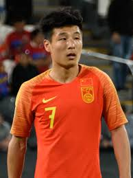

| Yan Junling |
Portero |
33 |
Yan Junling (Shanghai, 28 de enero de 1991) es portero del Shanghai Port y de la selección nacional de China. |
 |
| Zhang Linpeng |
Defensa |
35 |
Zhang Linpeng (Jinan, 9 de mayo de 1989) es un defensor experimentado que ha jugado en el Guangzhou Evergrande y la selección china, conocido como el “Ramos chino”. |
|
| Wu Xi |
Mediocampista |
35 |
Wu Xi (Shandong, 19 de febrero de 1989) es mediocampista del Shanghai Shenhua y capitán frecuente de la selección de China. |
 |
| Wu Lei |
Delantero |
33 |
Wu Lei (Nankín, 19 de noviembre de 1991) es delantero del Shanghai Port, exjugador del Espanyol en LaLiga. Es el máximo goleador histórico de la selección china. |
 |
| Ai Kesen (Elkeson) |
Delantero |
35 |
Ai Kesen (Coelho de Lima, Brasil, 13 de julio de 1989), nacionalizado chino, juega como delantero en Chengdu Rongcheng y en la selección de China. |
 |